Overview
A user interface in ADM is a tree of components. A component is three
pieces written in ADM itself: a view (what it is made of), a style
(how large it is, where its content goes, what it is painted with) and a controller
type (its fields, inputs and methods). The UI
service opens windows, gives each a root component, and draws the tree.
use (
std.ui.components::*
std.ui.styles::*
)
component Counter {
type {
@state
count int = 0
def add() {
count = count + 1
}
}
view {
Button(label = "Add one", onClick = add)
Text(text = "Pressed {count} times")
}
style {
Box
Layout
arrange = Arrange.Row
gap = new Axes<Extent>(8(px))
align = Align{vertical: Alignment.Center}
}
}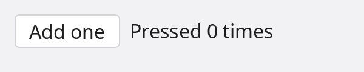
Counter component in a window.
The view names the controller's fields and methods directly: count in the text,
add as the button's handler. A view runs again on every frame that is drawn, and
an argument whose value changed is given to the child, so the text follows the count.
The three pieces can be written in place, as here, or declared apart and named
(view CounterView, style Frame, type Counting).
The examples below name a style Frame where the look does not matter: a
Box with Layout and nothing set.
The language rules behind this page are in the
language reference; the components std ships are listed
at the end with a picture of each. The pictures on this page are drawn by
the components themselves, without a screen, by a small program in the site's
tools/component-shots.
Views
The view of a component says which components it is made of, in the order they are laid out.
Placing components
A component is placed by calling it. Arguments are passed by name; the one unnamed argument
sets the input the component marks as its value (Text("Hello"),
Icon("search")). A block after the call holds the component's children.
view {
Heading(text = "Sign in", level = 2)
Row(gap = 8(px)) {
Label(text = "Email")
TextField(placeholder = "you@example.com")
}
Button(label = "Continue", onClick = submit, enabled = !sending)
}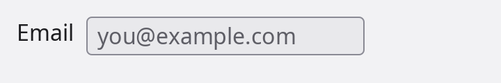
Row holding a Label and a TextField.
Every component also takes the inputs all components have: enabled,
tooltip, focusable, tabStop, autofocus.
Two arguments belong to the call and are no inputs: key = value says which child
of a loop this is, and ref = name names the child (below).
Control flow
A view body is ordinary ADM: every statement works in it as it does in a function,
conditions, loops, etc. Components enter and leave the tree with the branch that places
them, and a loop keeps its children by position, or by key when the calls
give one.
view {
Button(label = "Log out", onClick = logOut) when user.signedIn
for let message in messages {
MessageRow(message, key = message.id)
} empty {
Text(text = "No messages")
}
}Children
children() as a statement of a view is where the caller's block goes. A component
whose view has no children() takes no block.
component Section {
type {
@input
title string = ""
}
view {
Heading(text = title, level = 3)
children()
Divider()
}
style Frame
}
// elsewhere
Section(title = "Account") {
Text(text = "Signed in as {user.name}")
Button(label = "Sign out", onClick = signOut)
}Slots
A slot is an input typed view. The caller fills it with an
assignment inside the block; the component's view places it by calling it. A slot has a
fallback, or is optional and placed under if !(name is none).
component Card {
type {
@input
title string = ""
@input
header view = view { Heading(text = title, level = 3) }
@input
footer ?view = none
}
view {
header()
children()
if !(footer is none) {
footer()
}
}
style CardLook
}
Card(title = "Profile") {
footer = view {
Button(label = "Edit")
}
Text(text = "Ada Lovelace wrote the first program.")
}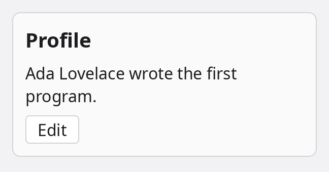
Card with its fallback header, the caller's text and a footer slot.
view { ... } is an expression: its statements are a view's, written in the scope of
whoever writes it. A slot that needs a value is a function returning a view
(row ?(def(Item) view) = none, placed with row(item)).
component FileList {
type {
@input(value = true)
files string[] = []
// What draws one line, given the file's name.
@input
row ?(def(string) view) = none
}
view {
for let file in files {
if row is none {
Text(text = file)
} else {
row(file)
}
}
}
style Frame
}
FileList(["main.adm", "lib.adm", "notes.md"]) {
row = (name string) => Chip(label = name)
}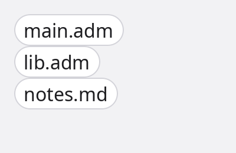
FileList with a row that draws each name as a Chip; without one it shows plain text.
The caller fills such a slot with a function. A component call written where a view is
expected is the view of that call, so (name string) => Chip(label = name) is
enough.
Naming a child: ref
ref = name on a call names the component the call places and declares
name as a member of the component whose view holds the call. The member is a weak
optional of the child's type: set when the child is built, none while the child is
not in the view. No field is written for it.
component Login {
type {
def toEmail() {
email.focus() unless email is none
}
}
view {
Label(text = "Email")
TextField(ref = email, placeholder = "you@example.com")
Button(label = "Go to the field", onClick = toEmail)
}
style Frame
}
A ref is given once per view and not inside a loop. It is also how a listener hears one
child's events (@on(save.clicked)) and how a Label or a
Popover is pointed at a component (Label(target = email)).
When a view runs
A view runs when its component is built and again on every frame that is drawn. On a run after the first, each argument is compared with what was passed the last time and assigned to the child's input when it differs; numbers, strings and enums compare by value, objects, arrays and maps by identity. Literals and handlers are bound once, when the child is built.
- A view body is cheap and has no effects: it is run often.
- An argument that builds an array or an object on every run is a new value on every run. Keep it in a field and pass the field.
- Frames are drawn when something happened in the window (an event, a state that changed,
redraw()), not on a timer; a component that moves by itself asks for its next frame. rerun()on a component runs its view again now.
Controllers
The controller type of a component holds what it knows and what it does.
Fields and methods
The controller is a regular type: fields, properties, methods, a constructor.
Inside it self is the component, so the members every component has are in reach:
style, parent(), children, redraw(),
focus(). def new() runs once the fields hold their defaults and the
inputs the call passed; it is where a component sets its own style.
Inputs
@input marks a field the caller may pass. @input(value = true) is the one
the unnamed argument sets. An input the call does not pass keeps its default.
type {
// Text("Hello") sets it.
@input(value = true)
text string = ""
@input
level int = 1
// A handler: a function, a method, or a function literal.
@input
onClick ?(def()) = none
}
@input(bind = true) is an input the component itself may assign, as a checkbox
assigns checked. The assignment reaches what the caller passed when that is a field
marked @bindable (the field, or its whole struct or type) or a property with a
setter; anything else is a copy. A control given a bindable field needs no handler that copies
the value back:
@bindable
type Settings {
wrap bool = true
volume float = 40.0
}
let settings = new Settings()
view {
Switch(on = settings.wrap, label = "Wrap lines")
Slider(value = settings.volume)
}States
@state marks a field as a state of the component. An assignment that changes it
emits UI.stateChange with the component, the field's name, the new value and the
one it replaced, and a bool or enum state is a key of the style's on
(below). An equal value emits nothing, nor do the values a component
is built with.
type {
@state
selected int = 0
}
// in any component or module: every change of a "selected" state of the tabs named mainTabs
@on(UI.stateChange, ref("mainTabs").state("selected"))
def tabChanged(evt Event<StateChange>) {
println("tab {evt.result.value}")
}Kept fields
@persist(key) keeps a field between runs of the program. A component that is created
starts with the value kept under the key, before new() runs; an assignment that
changes the value keeps the new one. The values are in the application's
Vault, encrypted, named
ui.persist.<key>.
type {
@persist("sidebar.width")
sidebarWidth int = 240
@state
@persist("editor.tab")
tab ?string = none
}- The key is a string literal of letters, digits,
.,_and-, and is the application's: every component that names it shares the value. - The type is one a vault value can be: numbers, strings, enums, arrays, maps, optionals, tuples, structs.
- A value changed in place is kept when the field is next assigned:
panes = panes + [pane], notpanes.push(pane). - A constructor that assigns the field replaces the value that was restored.
Events
A method marked @emit() is an event of the component: calling it runs the body and
then tells the listeners. A listener is a function or a method marked @on that
takes ComponentEvent<T> (source, name,
result), T being what the event method returns.
component Rating {
type {
@state
stars int = 0
@emit()
def rated(stars int) int {
return stars
}
def three() {
stars = 3
rated(3)
}
}
view {
Button(label = "Three stars", onClick = three)
}
style Frame
}
@on(Rating.rated) // every Rating
def onRated(evt ComponentEvent<int>) {
println("rated {evt.result}")
}| Listener | Hears |
|---|---|
@on(Button.clicked) | every button |
@on(save.clicked) | the child the listener's own view named save with ref |
@on(Button.clicked, ref("save")) | the components a selector matches |
@on(UI.click) and the other events of the UI service | what happens in the windows: click, mouseMove, mouseWheel, keyDown, keyUp, textInput, resize, closeRequested, stateChange; the handler takes Event<T> |
The std components emit an event beside each handler input: clicked beside
onClick, changed(value) beside onChange,
closed beside onClose. A listening method runs for each live instance
of its type.
Built-in members
A controller method with the name and parameters of one every component has replaces it for that component.
| Member | What it is |
|---|---|
def new() | Runs when the component is built: fields hold their defaults, inputs what the call passed. |
def attached(), def detached() | Run when the component enters the tree of a window and when it leaves it. |
def render(ctx RenderContext) | Draws it. The default draws its shadows, background, borders and children. Runs when its inputs, style or place changed, or after redraw(). |
def measure(limit Limit) Size<Pixels> | The size of its own content, for a component that draws text or a picture. |
def pointer(e PointerEvent) bool, def key(e KeyEvent) bool | What a pointer and the keyboard do: offered to the component concerned, then to its ancestors until one returns true. |
style | Its style object: style.width = 300(px). style.geom is where layout put it. |
parent(), children, next(), prev() | The tree around it. |
closest<C>(), find<C>(ref = "") | The nearest ancestor, or a descendant, of a component type. |
redraw(), rerun(), focus(), reveal() | Asks for a frame, runs the view again, takes the keyboard focus, scrolls itself into sight. |
enabled, disabled | enabled is an input; disabled also holds under a disabled ancestor. |
Controllers declared apart, generic components
A component may name its controller as a type declared elsewhere and marked
@controller(). The component has that type's fields, inputs and methods as if they
stood in its own type { }. Several components may name one controller, each with
its own state.
@controller()
type Counting {
@input
step int = 1
count int = 0
def add() {
count = count + step
}
}
component Stepper {
view {
Button(label = "Add", onClick = add)
Text(text = "{count}")
}
style Frame
type Counting
}
// placed as
Stepper(step = 2)
A component takes type parameters as a type does: component List<T> { ... }, with
T in scope in its controller and its view, placed as List<File>(files)
or List(files). A component declared internal is a part only its own
module places.
Styles
The style of a component is its box: its size, how it places its content, and what it is painted with.
Composing a style
A style is a set of properties, and it is composed: a style declaration lists the styles it
embeds, and has the properties of all of them. Std's styles (std.ui.styles) are the
pieces; a component's style embeds the ones the component uses, and nothing else is stored or
looked at for it.
// A box that lays its children out.
style Frame {
Box
Layout
}
// The same, painted: background, borders, outline, shadows.
style CardLook {
Box
Layout
Decorated
}| Style | Properties |
|---|---|
Box | Every style embeds it: width, height, minWidth … maxHeight, margin, padding, position, anchors, layer, visible, align, direction |
Layout | How a container arranges its children: arrange (Column, Row, …), gap, distribute, wrap, reverse |
Tracks | A grid's columns and rows |
Background, Borders, Outline, Shadows | What a box is painted with; they share one radius (Shape) |
Decorated | Background, Borders, Outline and Shadows together |
Typography, Foreground | Font, line setting and decoration; the colour of text and icons |
Interaction | How it meets the pointer: cursor and what takes presses |
Motion | How a change of look is timed: transition, and the enter and exit looks |
Control | What a control is made of: Decorated, Typography, Interaction and Motion |
Compositing, Transforms | opacity and blending; a drawn transform that moves nothing in the layout |
Clipping, Filters, Backdrop, Effects | Cutting content to the shape; filters over the component and over what is behind it |
Editable, Scrollbars, ImageContent | The caret, selection and placeholder of editable text; a scrolling component's bars; how a picture fits its box |
A style embedded twice, or reached through two styles that both embed it, is one copy of its
properties. A style may declare properties of its own with
@styleProperty let name Type = default.
Setting properties
The style block is where a component's look is written: after the styles it embeds, each
line assigns a property. A let is a value of the body's own, read by the lines
after it.
style CardLook {
Box
Layout
Decorated
let palette = UI.theme().palette
width = 300(px)
padding = new Edges<Extent>(12(px))
gap = new Axes<Extent>(8(px))
radius = new Corners<Extent>(8(px))
background = new BackgroundFill(palette.surface)
border = new Edges<Border>(Border{width: 1(px), paint: palette.border})
}- A value may read a property set above it or one an embedded style declares:
height = width. - A literal without a type changes the fields it names and keeps the rest:
margin = {left: 16(px)}. - A property the style does not embed is a compile error: a style of
BoxandLayouthas nobackgroundto set. - The body runs once for each component, when its style is made.
- A style that embeds another style of yours takes that style's properties and their defaults, not the assignments its body makes.
The controller reaches the same object as style, for what depends on its inputs
or changes while the component lives:
type {
@input
wide bool = false
def new() {
style.width = 480(px) when wide
}
}Sizes and units
A size, a gap, a padding or a radius is a number with a unit. width and
height also take auto and fill.
| Written | Is |
|---|---|
300(px) | Logical pixels: the same size on a standard and on a HiDPI display. |
50(%) | A share of the parent's content box: of its width for width, margins and paddings, of its height for height. |
100(vw), 100(vh) | Hundredths of the window's width and of its height. |
2(em) | Multiples of the component's font size. |
10(mm), 1(cm) | A physical length, from the display's density. |
auto | The size of the content. The default of width and height. |
fill | A share of the room left over in the parent; fill * 2 takes twice the share of a plain fill beside it. |
The units are ordinary units of measure: the type of such a
value is Extent, and mixing two of them in one sum does not compile.
minWidth, maxWidth, minHeight and maxHeight
bound what layout may give.
Position and anchors
A parent's layout places its children one after the other. position takes a
component out of that, and anchors say where its edges go.
position | Placed |
|---|---|
Position.Normal | By the parent's layout, among its siblings. The default. |
Position.Relative | Out of the layout, against the parent's box. |
Position.Absolute | Out of the layout, against the window: (0, 0) is its top left. |
Position.Sticky | Like Normal, then held at the edge of the scroll area once scrolled past it. |
// In the top right corner of what holds it.
component Stamp {
type {}
view {
Badge(label = "new")
}
style {
Box
Layout
position = Position.Relative
anchors = Anchors{top: 6(px), right: 6(px)}
layer = Layer.Floating
}
}
Panel() {
Text(text = "Release notes")
Stamp()
}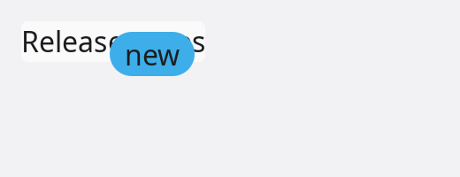
Stamp pinned 6 pixels from the top and the right of the panel that holds it.
Anchors has left, top, right,
bottom, centerX and centerY. A distance is measured from
the matching edge of the box the component is placed against; left and
right both set stretch it across. An anchor can also name an edge of another
component, which it then follows when that component moves:
// Under `target`, starting at its left edge.
component Hint {
type {
@input
target ?component = none
def attached() {
let under = new AnchorLine(target, AnchorEdge.Bottom)
under.offset = 4(px)
style.anchors = Anchors{top: under, left: new AnchorLine(target, AnchorEdge.Left)}
}
}
view {
Text(text = "Saves the file")
}
style {
Box
Layout
position = Position.Absolute
layer = Layer.Tooltip
}
}
view {
Button(label = "Save", ref = save)
Hint(target = save)
}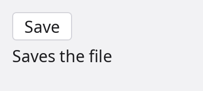
Hint anchored to the bottom and the left edge of the button named save.
Popover, Menu and Tooltip are built this way and also
flip to the other side when there is no room; reach for them before writing anchors by hand.
Layers
layer says what a component is drawn over. Layers are window-wide and fixed, from
the bottom up; inside one layer, the order in the tree decides. There is no numeric z-index.
layer | For |
|---|---|
Layer.Background | Behind the content: wallpapers, backdrops. |
Layer.Content | Where components draw unless they say otherwise. |
Layer.Floating | Above the content: sticky headers, floating buttons. |
Layer.Modal | Dialogs; a newer one is on top. |
Layer.Popup | Menus and dropdowns, also over a dialog. |
Layer.Tooltip | Tooltips. |
Layer.Notification | Toasts. |
Layer.Drag | What follows the pointer during a drag. |
Layer.Debug | Inspector overlays. |
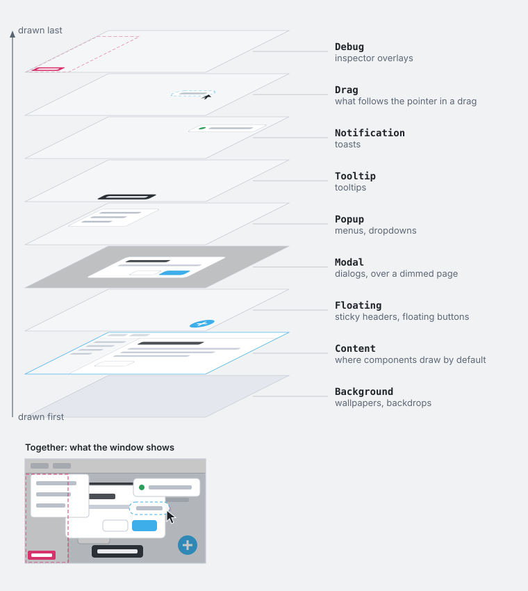
A component in a layer above Content is clipped by the window only, not by the
scroll views and panels it is written in. The layer does not move it: position
and anchors do.
Looks of states
A style body may assign on: the looks of the component's states. Each entry lists
the properties that differ while the state holds. The entries that hold are applied, in the
order written, to a copy of the style the component is drawn with; the component's own style
is not written into.
style CardLook {
Box
Layout
Decorated
Compositing
let palette = UI.theme().palette
background = new BackgroundFill(palette.surface)
on = {
hover: {background: new BackgroundFill(palette.surfaceRaised)},
pressed: {background: new BackgroundFill(palette.surfaceSunken)},
disabled: {opacity: 0.4},
}
}| State | Holds |
|---|---|
hover, pressed | while the pointer is over the component, and while a button is held down on it |
focused, focusWithin, focusVisible | while it has the keyboard focus, while something in it has, and while the focus should show (it came from the keyboard) |
disabled | while it or an ancestor is not enabled |
dragging, dropTarget | while it is being dragged, and while something is dragged over it |
a @state bool field | while the field is true: selected, open, checked |
a case of a @state enum field | while the field holds that case |
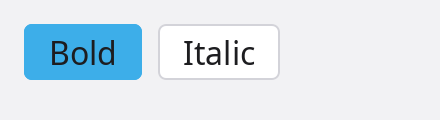
ToggleButton: its @state field on is a key of its style's on.
A key may list several states, [hover, selected]: {...}, and an entry may hold an
on of its own; both hold when all their states do. A name that is no state of the
component is a compile error, and so is a property the style does not embed
(opacity needs Compositing).
Enter and exit
A style that embeds Motion may assign enter and exit: the
look a component appears from and the look it leaves to. The component travels between that look
and its own over its transition. A child a view no longer places stays drawn until
its exit has played.
style Fade {
Box
Compositing
Transforms
Motion
enter = {opacity: 0.0, transform: {translate: {y: 8(px)}}}
exit = {opacity: 0.0}
transition = Transition{duration: 150ms}
}Drawing
A component is drawn by its render method. The one every component has draws
the std passes in order: the shadows that fall outside it, its background, its borders, its
children, the shadows inside it. A component that draws something of its own declares
render and calls the passes it wants around its own drawing.
The render method
style MeterLook {
Box
Decorated
let palette = UI.theme().palette
width = 180(px)
height = 14(px)
radius = new Corners<Extent>(7(px))
background = new BackgroundFill(palette.surfaceSunken)
border = new Edges<Border>(Border{width: 1(px), paint: palette.border})
}
component Meter {
type {
@input(value = true)
value float = 0.0
def render(ctx RenderContext) {
ctx.background()
ctx.borders()
let frame = ctx.geometry.frame
let (wide, high) = (float(frame.width), float(frame.height))
ctx.draw.fill(Rect{left: 0.0, top: 0.0, right: wide * value, bottom: high}, high / 2.0, UI.theme().palette.accent)
}
}
view {}
style MeterLook
}
Meter(0.6)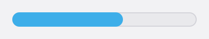
Meter(0.6): the background and the border are the style's, drawn by the passes; the bar is drawn by render.
render runs when the component's inputs, style or place changed, or after
redraw(); it does not run on every frame. Something that moves by itself asks
for its next frame from inside render.
The render context
RenderContext | What it is |
|---|---|
outerShadows() | Draws the shadows that fall outside the component. |
background() | Draws its background, in its shape. |
borders() | Draws its borders. |
childNodes() | Draws its children. Leave it out and they are not drawn. |
innerShadows() | Draws the shadows inside it, over the children. |
draw | The canvas, in the component's own coordinates: (0, 0) is the top left of its border box. |
style | The style it is drawn with, after the looks of the states that hold. |
geometry | Where layout put it: frame (the border box in the window), content (the box inside border and padding), baseline. |
damage | The part that needs drawing; drawing outside it is wasted, not wrong. |
scale, direction | Device pixels per logical pixel; the reading direction it was laid out in. |
A pass does nothing when the style lacks what it draws: background() on a style
without Background draws nothing. The order of the calls is the order things are
painted in, so a component can draw under its children, over them, or between two passes.
ctx.draw is a std.gfx.canvas
draw context: fill and stroke of rectangles, circles, lines and
paths, drawImage, fillText, clip, save and
restore. A paint is a colour, a gradient or a pattern.
For a drawing that is not a component of its own, the Canvas
component takes the function: Canvas(draw = drawChart).
Themes and icons
The colours, fonts and measures of the std components come from the theme, and an application's own components take theirs from the same place, so that both change together.
The theme
UI.theme() is the application's Theme. It starts from what the
desktop asks for (light or dark, the accent colour, the contrast, the font and its size) and
follows it while the program runs.
Theme | Holds |
|---|---|
palette | The colours: window, surface, surfaceRaised, surfaceSunken, overlay; foreground, foregroundMuted, foregroundDisabled; border, borderStrong, divider; accent, onAccent, hover, pressed; focus, selection; link; danger, warning, success, info; scrim, shadow. |
fonts | body, label, caption, title, headings, code. |
metrics | unit (4 px, the step spacing is counted in), radius, borderWidth, focusWidth, controlHeight, iconSize, touchTarget, density. |
motion, elevation | The durations and curves of transitions; the shadows by height. |
color(name), run(name) | Colours and text looks outside the fixed set, by dotted name: "syntax.keyword", "editor.lineNumber". A name not found is looked up without its last part. |
// Dark, whatever the desktop says.
let look = UI.appearance()
look.scheme = ColorScheme.Dark
UI.theme().follow(look)
// Back to the desktop's.
UI.theme().follow(UI.appearance())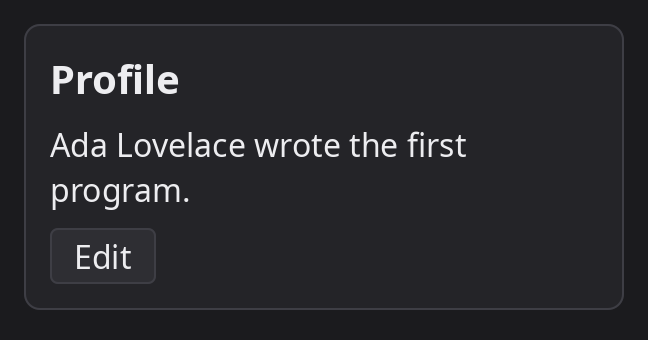
CardLook, which takes its colours from the palette.
UI.appearance() is what the desktop reports (scheme,
accent, contrast, reduceMotion, textScale,
the fonts), and UI.appearanceChange is emitted when the user changes it. A
style block runs when its component is created, so the colours it reads are those of that
moment: a component that has to follow a change of theme while it is on screen reads the
palette in render, or sets the property again when the event arrives.
Icon sets
An icon is named: Icon("search"), Button(label = "Add", icon = "plus"),
TextField(leading = "search"). Std brings a small set for its own components
(search, check, close, plus,
minus, menu, chevron-down among them). An application adds its own from a
folder of SVG files:
use std.ui.icons::(icons)
// Bakes every .svg of the folder into the program.
@icons("assets/icons")
partial type AppIcons {}
// once, after UI.start()
let app = new AppIcons()
UI.addIcons(try app.set())
// then, anywhere
Icon("icons/arrow-left")
Button(label = "Back", icon = app.ArrowLeft)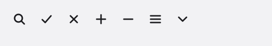
- The set is named after the folder, or by
name = "..."; an icon isset/file, and the type gets one read-only name per file (arrow-left.svgisArrowLeft). - Icons are drawn in the colour of the text around them.
tinted = falsekeeps the files' own colours. - A set added later is looked in first, so an application can replace one of std's icons by naming its own alike.
Scoped components
A component marked @scoped is neither laid out nor drawn: its children are placed as
if they were its parent's. It is there for what it does to them (a context, a behaviour, their keys). It
names no style and declares no render. It still has a controller, hears the
pointer and the keys of what it holds, and is found with closest<C>().
// Hears the keys of what it holds.
@scoped
component KeyLog {
type {
def key(e KeyEvent) bool {
return false when !e.down
println("key {e.key}")
return false
}
}
view {
children()
}
}
Row(gap = 8(px)) {
KeyLog() {
Button(label = "One") // laid out as children of the row
Button(label = "Two")
}
Button(label = "Three")
}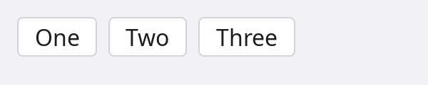
Std's scopes: FocusScope (remembers which component in it had the focus;
trap = true keeps Tab inside), Tooltip (content shown beside what it
holds), Draggable and DropTarget (drag and drop).
Annotations
The annotations of the component system, in one place. Each is described in the section it links to.
| Annotation | On | What it does |
|---|---|---|
@input | a controller field | The caller may pass it by name. |
@input(value = true) | a controller field | The unnamed argument of a call sets it. One per component. |
@input(bind = true) | a controller field | The component may assign it, and the assignment reaches a @bindable place the caller passed. |
@bindable | a field, a struct, a type | A bound input it is passed to may assign it. |
@state | a controller field | A change emits UI.stateChange; a bool or enum state is a key of the style's on. |
@persist(key) | a controller field | Kept between runs under the key, restored when the component is created. |
@emit() | a controller method | The method is an event of the component. |
@on(Component.event, matcher) | a function or a method | Listens to a component event; the matcher is a ref or a selector. |
@on(UI.event, filter) | a function or a method | Listens to an event of the UI service. |
@controller() | a type | The type is a controller components name as theirs. |
@scoped | a component | Not laid out and not drawn; its children are placed as its parent's. |
@styleProperty | a let of a style | Declares a property of the style; inherit = true makes an unset one take the parent's. |
@childProperty | a let of a style | A property a child sets for its container (alignSelf, a grid cell's span). |
Call arguments that are no annotations but belong here: ref = name and key = value on a component call, and children() in a view.
Windows
A window shows one component, its root, laid out in the window's size.
Starting the UI
The UI service owns the windows. An application
configures it, starts it, and calls run with the component that stands for its
window; run returns when no window is open any more.
application Notes {
use (
std.math.geom::Size
std.ui::(UI, UIConfig)
std.ui.renderer
std.units::Pixels
notes::Page
)
async def new(args string[]) !int {
try UI.config(UIConfig{rendererName: "opengl"})
try await UI.start()
let window = new renderer.WindowConfig("Notes", 900, 640)
window.minSize = new Size<Pixels>(480(px), 320(px))
window.persist = "main"
try await UI.run(Page(), window)
return 0
}
}UIConfig field | Default | Meaning |
|---|---|---|
rendererName | "" | The renderer by name: "opengl". Used when renderer is none. |
renderer | none | A renderer object in place of a name. |
host | none | What provides the windows, the input, the clipboard and the tray; none: the platform's (SDL3 on Linux, macOS and Windows). |
defaultWindow | new WindowConfig() | What run(root) and openDefaultWindow(root) open. |
exitOnLastWindowClose | true | Ask the application to end when the last window closes. |
showFPS | false | Show the frame rate in the window's title. |
forceRedraw | false | Draw every frame. Off, a window is drawn only after something happened in it. |
Window parameters
new WindowConfig(title = "ADM", width = 800, height = 600) makes the description of a
window; its fields say the rest. Sizes and places are logical pixels.
| Field | Default | Meaning |
|---|---|---|
title | "ADM" | The title in the title bar and the taskbar. |
size | 800 by 600 | The size of what the window shows. |
minSize | none | The smallest the user can make it. |
position | none | Where its top left corner goes; none: the desktop places it. placeOn(display, align, margin) sets it against the edges of a display's work area. |
state | WindowState.Normal | How it opens: Normal, Minimized, Maximized, Fullscreen. |
resizable | true | Whether the user can resize it. |
decorated | true | False: no title bar and no frame. The root component draws its own and marks what drags the window with WindowDrag. |
icon | none | The window's icon, an image.Image. |
transparent | false | No background of its own: where its components draw nothing, what is behind the window shows. |
clickThrough | ClickThrough.None | Where a press goes to what is behind the window: None, Empty (where it shows nothing; needs transparent), All (an overlay, a notice). |
alwaysOnTop | false | Stays above the other windows. |
kind | WindowKind.Normal | Normal, Dialog or Utility; what that looks like is the desktop's. |
owner | none | The window it belongs to and stays above. |
vsync | true | Frames in step with the display. |
persist | "" | A name to keep its place under: the window opens with the size, position and state it had when it was last open, on a display that still shows that place. Kept where @persist fields are. |
Windows while they are open
UI.openWindow(root, config) opens a further window and gives back its
Window; one run serves them all. A window's properties are read and
set: what is set reaches the desktop on the loop's next pass.
Window | Meaning |
|---|---|
visible | False: not on screen and not in the taskbar, still open with its components mounted. How a window goes to the tray. |
state | Normal, minimized, maximized or fullscreen, as the desktop reports it; UI.windowStateChanged is emitted when it changes. |
bounds | Where it is and how large what it shows is. Set it to move or resize the window. |
active | Whether the keyboard goes to it. |
let palette = new renderer.WindowConfig("Palette", 240, 400)
palette.kind = WindowKind.Utility
palette.alwaysOnTop = true
let tools = try UI.openWindow(Palette(), palette)
// Closing the main window hides it instead: the application lives on in the tray.
@on(UI.closeRequested)
def keep(evt Event<CloseRequest>) {
evt.result.cancel()
evt.result.window.visible = false
}
Also on the service: closeWindow, raiseWindow, setWindowTitle,
setWindowIcon, showTray(icon, tooltip, menu) and hideTray(),
displays(), appearance() and theme(),
addIcons(set), redraw(), stop(). The full list with every
event is on the services page.
Built-in components
The components of std.ui.components, drawn
in the light theme. Each takes the inputs every component has (enabled,
tooltip, …) beside its own, and a control that holds a value takes it as a bound
input: give it a @bindable field, or a handler (onChange).
Text
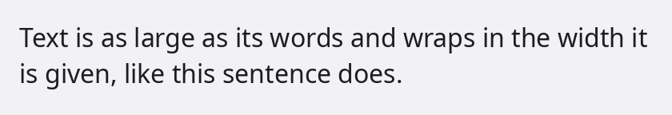
Text
A run of text: as large as its words, wrapping in the width it is given. runs style ranges of it apart.
Text("Hello {name}")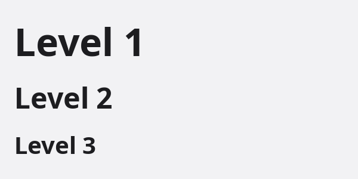
Heading
A title over what follows; level 1 is the largest, 6 the smallest.
Heading(text = "Install", level = 2)Label
The name of a control. A press on it focuses the control it names: target, or the component after it.
Label("Email")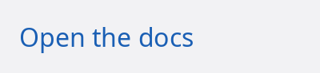
Link
Text that goes somewhere when pressed, in the theme's link colour.
Link(label = "Open the docs", onClick = openDocs)Icon
An icon by name from std's set or the application's (UI.addIcons), in the text colour.
Icon("search")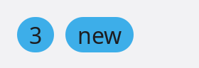
Badge
A short note on something, in a pill: a count, a state.
Badge(label = "3")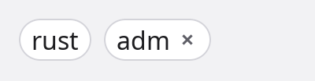
Chip
A small labelled token: a tag, a filter. With onRemove it has a cross.
Chip(label = "rust", onRemove = drop)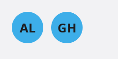
Avatar
Who something belongs to, in a circle: initials, or a picture with source.
Avatar(name = "Ada Lovelace")Buttons and choices
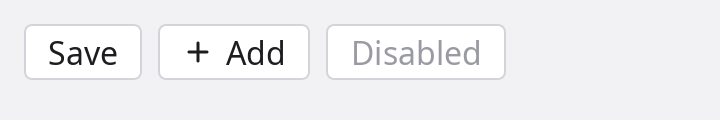
Button
Runs something when pressed with the pointer, Space or Enter. Takes an icon and a trailing icon.
Button(label = "Save", onClick = save)ToggleButton
A button that stays down; on, it is filled with the accent.
ToggleButton(on = bold, label = "Bold")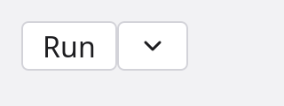
SplitButton
A button with more ways to do the same thing behind an arrow: the lines in its block.
SplitButton(label = "Run", onClick = run) { MenuItem(label = "Debug") }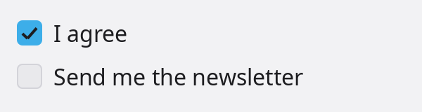
Checkbox
A box that is checked or not, with a label after it.
Checkbox(checked = agreed, label = "I agree")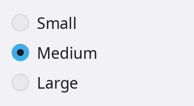
Radio
One choice among several; the caller unselects the others by what it passes them.
Radio(selected = size == "small", label = "Small", onChange = pickSmall)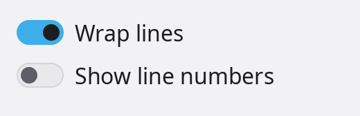
Switch
Something that is on or off and takes effect at once.
Switch(on = wrap, label = "Wrap lines")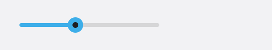
Slider
A value picked by dragging a thumb along a track; the arrows move it a step.
Slider(value = volume, min = 0.0, max = 100.0)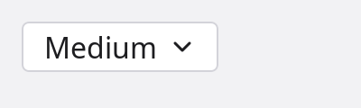
Dropdown
One choice out of a list that opens under a button.
Dropdown(options = ["Small", "Medium", "Large"], selected = size)Fields
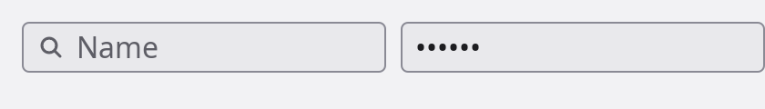
TextField
One line of text: caret, selection, clipboard, a placeholder, icons at its ends; kind (TextKind) makes it a password, an email or a number field.
TextField(value = name, placeholder = "Name", leading = "search")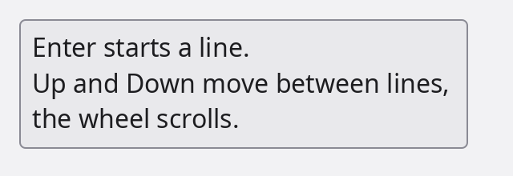
TextArea
Several lines of text, scrolling when they are taller than its rows.
TextArea(value = notes, rows = 3)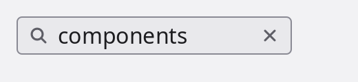
SearchField
A text field with a magnifier and a cross that empties it; Enter runs onSubmit.
SearchField(value = query, onSubmit = search)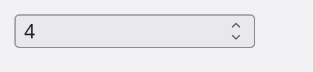
NumberField
A number between limits, stepped by the arrows in the field and by Up and Down.
NumberField(value = count, min = 0.0, max = 10.0)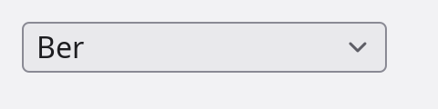
ComboBox
A text field with a list of the options that hold what is typed; text that is no option is allowed.
ComboBox(value = city, options = cities, placeholder = "City")Layout
Row
Places its children along the reading direction.
Row(gap = 8(px)) { ... }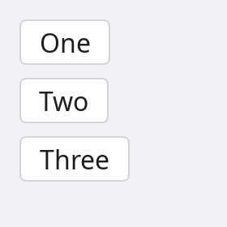
Column
Places its children top to bottom.
Column(gap = 8(px)) { ... }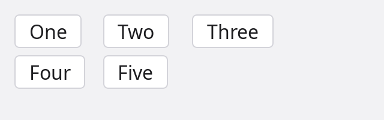
Grid
Equal columns, or as many columns of a width as fit (fit = 240(px)).
Grid(columns = 3, gap = 6(px)) { ... }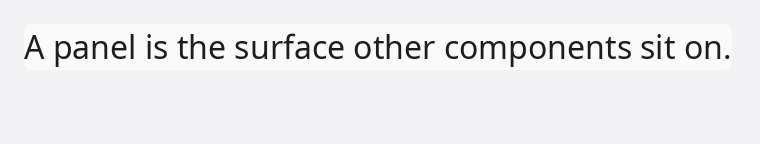
Panel
A container with the theme's surface as its background: what other components sit on.
Panel() { ... }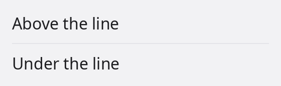
Divider
A thin line between two parts; vertical = true stands between the parts of a row. Spacer() is empty room that takes what is left over.
Divider()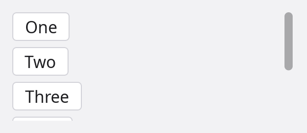
ScrollView
Shows content larger than itself and scrolls it with the wheel, the keys or its bars.
ScrollView() { ... }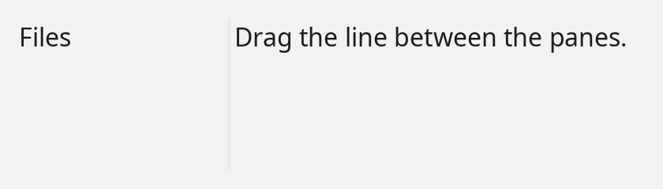
SplitPane
Panes that share the room by sizes, with dividers to drag; stacked = true puts them one above the other.
SplitPane(sizes = [1.0, 2.0]) { Files(); Editor() }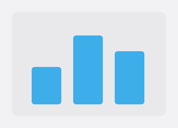
Canvas
A surface a function draws on; animated = true draws it on every frame.
Canvas(draw = drawChart)Menus and overlays
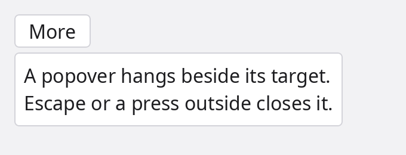
Popover
Content that hangs beside a component, over the page; it flips or shifts when there is no room.
Popover(open = more) { ... }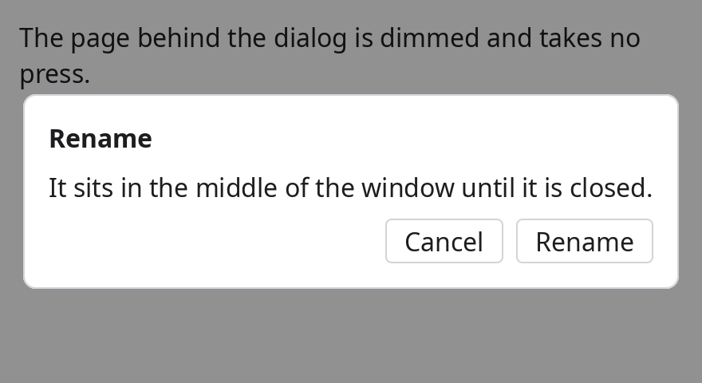
Dialog
Asks something before going on: the page behind it is dimmed and takes no press, Tab stays inside, Escape closes it.
Dialog(open = asking, title = "Rename") { ... }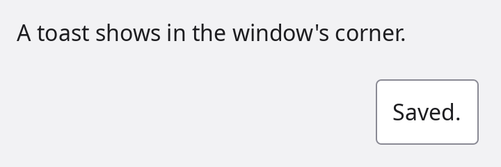
Toast
A notice in the window's corner that goes by itself, or when pressed.
Toast(text = "Saved.", open = saved)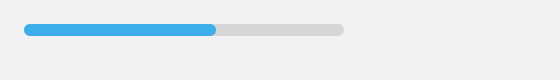
ProgressBar
How far along something is, 0 to 1; without a value, work of unknown length.
ProgressBar(value = done)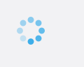
Spinner
Work in progress with no known length, in little room.
Spinner()Without a picture
| Component | What it is |
|---|---|
Pressable | Makes what is inside it something to press, with the pointer or, focused, Space or Enter. |
Image | A picture; fit says how it fills a box of another shape. |
Layered | Puts its children on top of each other, the last on top. |
Tooltip, HoverCard | Content shown beside what the pointer rests on; a hover card can be entered and used. For plain text every component has tooltip = "...". |
ContextMenu, SubMenu, MenuItem, MenuSeparator | The parts of menus. |
Draggable, DropTarget | Drag and drop between components of a window. |
FocusScope | Remembers the focus of a part of a window; trap = true keeps Tab inside. |
WindowDrag | The part of a window without a title bar that drags the window. |
Spacer | Empty room that takes what is left over in a row or a column. |